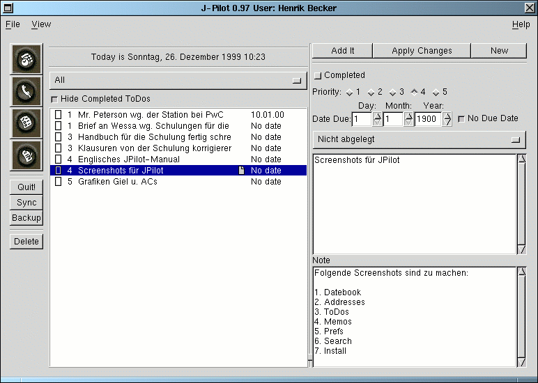

On the left side of the screen there is a list of todos. These can be viewed by category from themenu above them. They will appear in the same order as on the Palm Pilot. If you want change this, you must change it on the Palm Pilot under the menu in the todo program and then sync and switch to another application and back. You may also check the "Hide Completed ToDos" button if you don't want to see completed todos.
To delete a record, just highlight the record and hit the delete button on the left side of the screen.
Record To add a new record, Press the "Clear" button in the upper right hand corner of the window. Thenfill in all of the details of the todo record and then press "Add It". New records will show up in a different color. Once they are synced they will be the same color as existing records.
To modify a record select the record, change the details of the todo and then press the "ApplyChanges" button.
Also, todo items can be checked, or unchecked by clicking in the checkmark box.